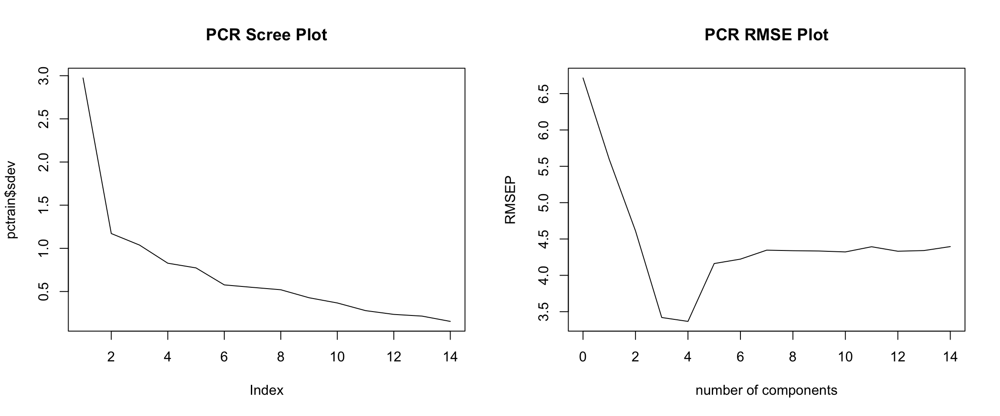
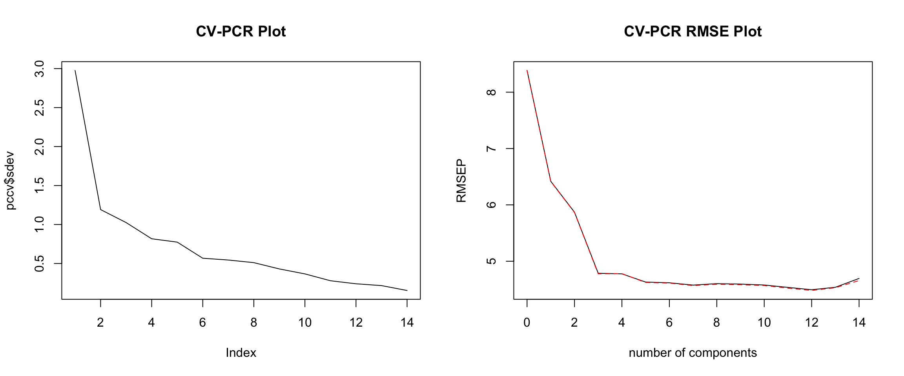

The idea bahind dimensionality reduction is similar to that of other variable selection methods. Perhaps the distinction is that in the methods considered here the selection of a subset of variables is done independantly of the responce variable. In contrast the \(AIC\) or \(R^2_{Adj}\) used a measure of fit and balanced it with the number of variables. In the types of analysis considered here the responce playes no role.
The key idea behind PCA is that variation in a variable translates into information, and we want to use variables that have the greatest information. PCA takes the idea a bit further then just selectiong a subset of variables with the highest variances. Instead in PCA you construct new variables that are linear cominations of the given variables, but in a very particular manner. Here is what happens:
We take \(X = <X_1, X_2, ..., X_p>\) where each R.V. is centered to have mean 0. Then we define \(Z_{i} = u_{i1}X_1 + u_{i2}X_2 + ... + u_{ip}X_p = u_{i}^TX\) which is just a R.V. that is a linear combination of all the \(X's\). We are going to want to use \(Z_{i}\) as a predictor, and so we engineer it to have a highest variance we can achieve. This maximization is subject to the vector \(u_{i}\). To get the first \(Z_{1}\) we solve for \(u_{1}\).
maximize \[Var(u_{1}^TX) = u_{1}^TVar(X)u_{1} = u_{1}^T \Sigma u_{1}\] subject to \[u_{1}^Tu_{1} = 1\]
To get the second \(Z_{2}\) we solve for \(u_{2}\), with another constraint that will guarantee that \(cov(Z_{1},Z_{2}) = 0\) so that there is no duplication of information.
maximize \[Var(u_{2}^TX) = u_{2}^TVar(X)u_{2} = u_{2}^T \Sigma u_{2}\] subject to \[u_{2}^Tu_{2} = 1\] and \[cov(Z_{1},Z_{2}) = Cov(u_{1}^TX, u_{2}^TX) = u_{1}^TCov(X,X)u_{2} = u_{1}^T \Sigma u_{2}\]
It turns out that the solution is that \(u_{1}\), \(u_{2}\) … \(u_{p}\) are Eigenvectors corresponding to \(\lambda_{1} \geq \lambda_2 \geq ... \geq \lambda_p\) which are ordered Eigenvalues of \(\Sigma = X^TX\). So we can get all of the \(Z_{i}'s\) by computing the Eigenvectors of the estimated variance covariance matrix of the predictors.
library(faraway)
data("fat")
index <- seq(10, 250, by=10)
train <- fat[-index, -c(1, 3, 8)]
test <- fat[index, -c(1, 3, 8)]First we do very basic PCA. We compute the principal components based on the training covariates on a scaled basis. Then we plot the scree plot to get an idea of how the components explain the variation. In the plot we are looking for a kink, since that suggests that the next component doesn’t add a significant amount of explanatory power. In our plot there isn’t a distinct kink. Perhaps 4 or 6 PCs would be an adequate choice for prediction.
pctrain = prcomp(train[,-1], scale = TRUE)What we do however is we use all the possible reasonable numbers of PCs and compute RMSE for each, then choose one with the lowest RMSE achieved. Of course RMSE is computed using the training data. From the plot we see that 4 PCs is the clear minimizing choice. Thus we add this to our results. A criticism of this however would be that we are using information from the testing data, and thus corrupting the integrity of the validation.
mod3 = pcr(siri ~ ., data = train)
par(mfrow = c(1,2))
plot(pctrain$sdev, type = "l", main = "PCR Scree Plot")
plot(RMSEP(mod3, newdata = test), main = "PCR RMSE Plot")
pred3 = predict(mod3, test, ncomp = 4)
RMSE3 = sqrt(mean((test$siri - pred3)^2))
results[3,] <- RMSE3
row.names(results)[3] <- "PCR"
results## RMSE
## OLS 4.395559
## OLS+AIC 4.342456
## PCR 3.366292To keep the integrity of the modeling, we can use Cross-Validation. For this we use the full dataset and effectively repeat the PCR with different random validation sets. The scree plot is again not so helpful, and the RMSE plot doesn’t give a very clear inflection point. Nonetheless we find that RMSE is minimized with 12 PCs and thus include this in our results. This CR-PSR results is lower then the OLS results, however it is greater then the one time validated PCR.
set.seed(1)
dt = rbind(train,test)
pccv = prcomp(dt[,-1], scale = TRUE)
mod3cv = pcr(siri ~., data = dt, validation = "CV")
cvRMSE = RMSEP(mod3cv, estimae = "CV")
par(mfrow = c(1,2))
plot(pccv$sdev, type = "l", main = 'CV-PCR Plot')
plot(cvRMSE, main = "CV-PCR RMSE Plot")
pred3cv = predict(mod3cv, test, ncomp = 12)
RMSE3cv = sqrt(mean((test$siri - pred3cv)^2))
results[4,] <- RMSE3cv
row.names(results)[4] <- "CV-PCR"
results## RMSE
## OLS 4.395559
## OLS+AIC 4.342456
## PCR 3.366292
## CV-PCR 4.033212